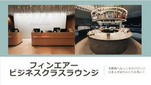

すけすけのマイル乞食
フィード
年会費1万円台のカードの入会ボーナスがなんと10万ポイントで激熱！！
すけすけのマイル乞食
【年会費は安いのに大量ポイント獲得可能】アメリカン・エキスプレス・ビジネス・カードの新規入会キャンペーンを徹底紹介。なんと最大7.5万ポイント+2.5万ポイントと超豪華。ポイントはANAマイルにもJALマイルにも交換可能...年会費1万円台のカードの入会ボーナスがなんと10万ポイントで激熱！！ first appeared on すけすけのマイル乞食.
16時間前
三井住友カード Visa Infiniteの入会キャンペーン＆ポイントサイト情報まとめ。
すけすけのマイル乞食
年会費99,000円（税込）というVisa最上位ランクのクレジットカード「三井住友カード Visa Infinite」の入会キャンペーン＆ポイントサイト情報まとめ。2026/11/30までなら豪華景品が当たる「KEY T...三井住友カード Visa Infiniteの入会キャンペーン＆ポイントサイト情報まとめ。 first appeared on すけすけのマイル乞食.
4日前

ヘルシンキ空港フィンエアービジネスクラスラウンジをレビュー。フィンエアーやJALで利用可能。
すけすけのマイル乞食
ヘルシンキ空港のフィンエアービジネスクラスラウンジをレビュー。フィンエアーやJALのビジネスクラスでヘルシンキ経由での旅行の際にはこの豪華ラウンジが利用できる。 ちょっと海外に行く機会が少なかったので、搭乗レビューやラウ...ヘルシンキ空港フィンエアービジネスクラスラウンジをレビュー。フィンエアーやJALで利用可能。 first appeared on すけすけのマイル乞食.
6日前

【過去最高額】年会費11,000円だが発行するだけで27,000円がもらえる伝説のカードあり！
すけすけのマイル乞食
過去最高額来た！！年会費11,000円の「dカード GOLD」にモッピー経由の申込するだけで27,000円がもらえる！しかも別途10,400円相当のdポイントつき入会キャンペーン開催！そして、スマホの紛失・故障に12万円...【過去最高額】年会費11,000円だが発行するだけで27,000円がもらえる伝説のカードあり！ first appeared on すけすけのマイル乞食.
20日前
SBI証券こども口座の開設はポイントサイトがお得！キャンペーンは開催されているのか！？
すけすけのマイル乞食
SBI証券こども口座の開設がポイントサイト経由で可能に！キャンペーンは行われているのか？こどもNISAの開始に備えておけ！！！ すでにご存じの方もいるかもしれませんが、2023年に終了した「ジュニアNISA」に代わり、2...SBI証券こども口座の開設はポイントサイトがお得！キャンペーンは開催されているのか！？ first appeared on すけすけのマイル乞食.
1ヶ月前
JAL国際線特典航空券PLUSでも欧州路線のビジネスクラス特典は取れない！？
すけすけのマイル乞食
JAL国際線特典航空券PLUSでも欧州路線のビジネスクラス特典は取れない！？特にロンドンは特典航空券ビジネスクラスの開放が少ない。狙うならフランクフルトか。 JALマイルはJAL国内線特典航空券PLUS、JAL国際線特典...JAL国際線特典航空券PLUSでも欧州路線のビジネスクラス特典は取れない！？ first appeared on すけすけのマイル乞食.
1ヶ月前
SFC改定の見直し案がついに発表。SFC LITEでもANAラウンジは原則利用可。300万円利用ならスタアラゴールドは変わらず。
すけすけのマイル乞食
SFCの見直し案がついに発表。ANAカード/ANA Payを年間300万円利用ならSFC PLUSでスタアラゴールドも付与300万円未達のSFC LITEも混雑時以外はANA LOUNGEは利用可能。 2026/4にAN...SFC改定の見直し案がついに発表。SFC LITEでもANAラウンジは原則利用可。300万円利用ならスタアラゴールドは変わらず。 first appeared on すけすけのマイル乞食.
1ヶ月前
「高輪 花香路」宿泊レビュー。東京都心部にある全室和室スイートの超豪華ホテル。
すけすけのマイル乞食
「高輪 花香路」ブログ宿泊レビュー。東京都心部にある全室和室スイートの超豪華ホテルで、客室・朝食・クラブラウンジともに超豪華。高輪 花香路はヒルトンのSLHに加入しているので、運が良ければヒルトンアメックスのウィークエン...「高輪 花香路」宿泊レビュー。東京都心部にある全室和室スイートの超豪華ホテル。 first appeared on すけすけのマイル乞食.
1ヶ月前
【2026/10版】ヒルトン・オナーズ最新プロモーションまとめ。
すけすけのマイル乞食
【2026/10版】ヒルトン・オナーズ最新プロモーションまとめ。宿泊で最大15,000ボーナスポイントがもらえるのでエントリーしておけ！ヒルトンアメックス保有者限定プロモーションも来ている！ 各種ホテルプログラムでは、様...【2026/10版】ヒルトン・オナーズ最新プロモーションまとめ。 first appeared on すけすけのマイル乞食.
1ヶ月前
【2026/10】ANAアメックスの入会キャンペーンの全貌を紹介。15万マイルを手に入れろ！
すけすけのマイル乞食
【2026/10版】過去最大級に激熱すぎてビビる！！ANAアメリカン・エキスプレス・カードおよびANAアメリカン・エキスプレス・ゴールド・カードのメリットを紹介。マイ友プログラム・ポイントサイト・アメックス新規入会キャン...【2026/10】ANAアメックスの入会キャンペーンの全貌を紹介。15万マイルを手に入れろ！ first appeared on すけすけのマイル乞食.
1ヶ月前